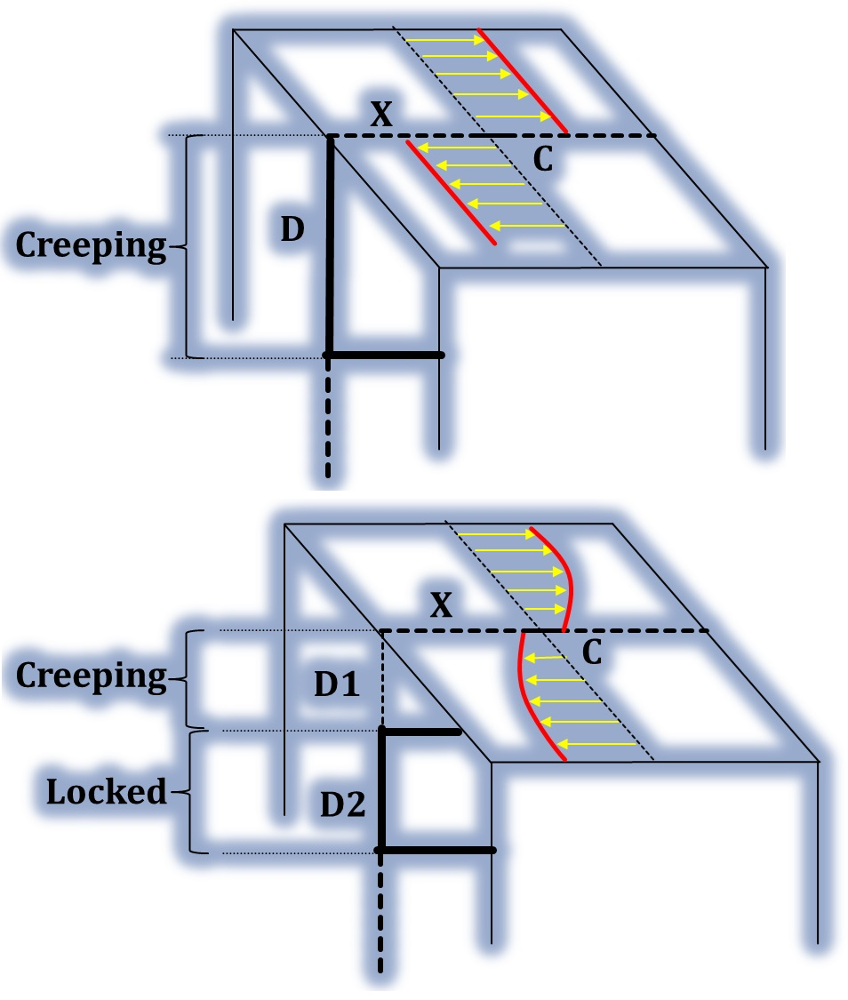

Dr. Yogendra Sharma
Seismic Hazard • GNSS & InSAR • Earthquake Modeling • AI & Bayesian Inversion
About Me
I am a postdoctoral researcher at NCKU specializing in crustal deformation, interseismic fault slip modeling,
and seismic hazard assessment. My research focuses on tectonically active zones such as the Himalayas,
Taiwan, and the Philippines. I integrate GNSS, InSAR, and advanced Bayesian and AI/ML techniques to
constrain fault kinematics and understand long-term earthquake behavior.
Research Interests
Geodesy, Earthquake Physics, Fault Mechanics, Interseismic Modeling, Machine Learning in Geosciences,
Probabilistic Inversion, Active Tectonics
Selected Publications
-
Sharma Y. et al. (2026), Seismic implications of creeping and coupled segments along the Philippine fault in Leyte from GNSS and InSAR data —
[DOI]
-
Sharma Y. et al. (2020), Spatial distribution of earthquake potential along the Himalayan arc —
[DOI]
-
Sharma Y. et al. (2023), Interseismic slip rate and fault geometry along the northwest Himalaya —
[DOI]
-
Sharma Y. et al. (2024), Kinematics of crustal deformation along the central Himalaya —
[DOI]
-
Sharma Y. et al. (2025), Fast report: Coseismic source model of the January 2025 Mw 6.1 Dapu earthquake —
[DOI]
Code & Data
GitHub: github.com/yogen1992
CV
Download my CV (PDF)
Contact
Email: yogenmaths2738@email.com
Sources
Researchgate: — [Link]
Linkedin: — [Link]
Google Scholar: — [Link]
Scopus: — [Link]
ORCID: — [Link]
Web of Science: — [Link]
Recent Highlight

Creeping and Coupled Segments along Philippine Fault in Leyte Island
We integrate GNSS and InSAR observations to investigate the interseismic and coseismic behavior of the Philippine Fault (PhF) in Leyte Island, central Philippines. Using a Bayesian dislocation framework applied along 11 fault-perpendicular profiles, we resolve fault geometry and slip-related kinematic parameters. The PhF accommodates aseismic deformation, with high creep rates of ∼37 mm/yr along the northern and southern segments and lower rates of ∼15 mm/yr along the central segment. Slip-deficit rates are spatially heterogeneous and reach up to ∼31-33 mm/yr in the northern and central segments, indicating the presence of coupled patches. Baseline inversions further resolve a coupled mid-crustal asperity beneath central Leyte, spatially coincident with the source region of the 2017 Mw ∼6.5 Leyte earthquake. Coseismic modeling shows that Leyte event was confined to the shallow portion of the fault, releasing up to ∼1.8 m of slip within the upper ∼7 km. The modeling results also reveal geodetic evidence for a subparallel fault strand in the central segment, implying that slip deficit within the locked zone of the PhF may be redistributed across multiple strands rather than concentrated on a single fault trace. Comparison with historical seismicity, together with interseismic slip-deficit estimates, suggests a recurrence interval of ∼70–80 years for large earthquakes in central Leyte.
View DOI →
Research Models
Interseismic Model (Himalaya)
Characterizes interseismic fault locking using GNSS data. Bayesian inversion constrains slip deficit on the Main Himalayan Thrust.
Coseismic Model (Taiwan)
Reconstructs coseismic displacement fields from GNSS. Used to derive fault slip distribution post-earthquake.
Single-fault and Splay-fault model (Himalaya)
In the Himalayan context, the single-fault model simplifies deformation by assuming that most slip accumulates and releases along the Main Himalayan Thrust (MHT), treated as a single décollement surface beneath the range. While effective for broad-scale interseismic and coseismic analysis, it may not capture the complexity of near-surface deformation. In contrast, the splay-fault model incorporates secondary faults that branch upward from the MHT—such as the Main Frontal Thrust (MFT)—to represent better distributed strain, uplift, and surface rupture patterns. This model aligns more closely with geological and paleoseismic evidence in regions exhibiting foreland folding and frontal fault propagation.
Strain Rate Model

Derived from GNSS velocity gradients to reveal regions with high seismic strain accumulation.
Velocity Inversion
Combines GNSS and InSAR to recover surface velocity fields, used for interseismic inversion modeling.
Thick-Skinned Model
Highlights the role of basement-involved tectonics in crustal shortening beneath thin-skinned thrusts.
Creeping-Locking Model

In the Leyte segment of the Philippine Fault, the Creeping–Locking model reveals a Parkfield-like behavior, where the fault exhibits surface creep while remaining locked at depth. Geodetic and InSAR data indicate that shallow portions of the fault accommodate slip aseismically, producing observable surface displacements without significant seismic activity. However, modeling suggests that deeper segments remain locked, accumulating strain over time. This vertical partitioning—creep above, locking below—implies the potential for future moderate to large earthquakes from deeper rupture, despite the apparent surface motion, making it crucial for accurate seismic hazard assessment.